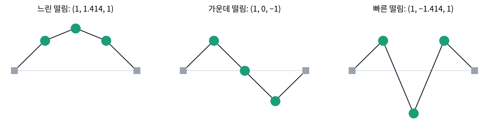
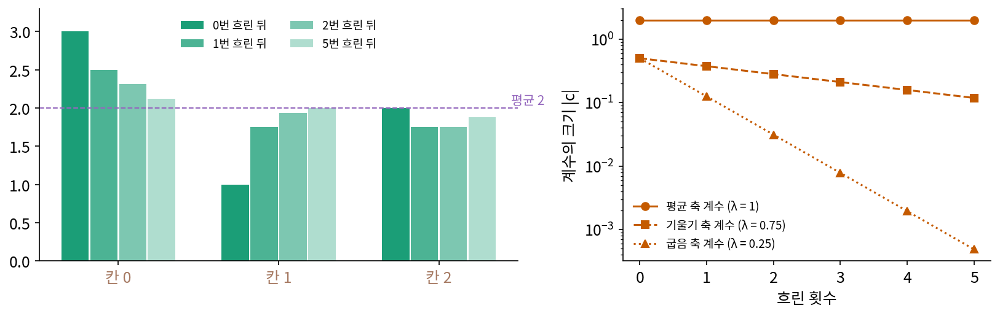
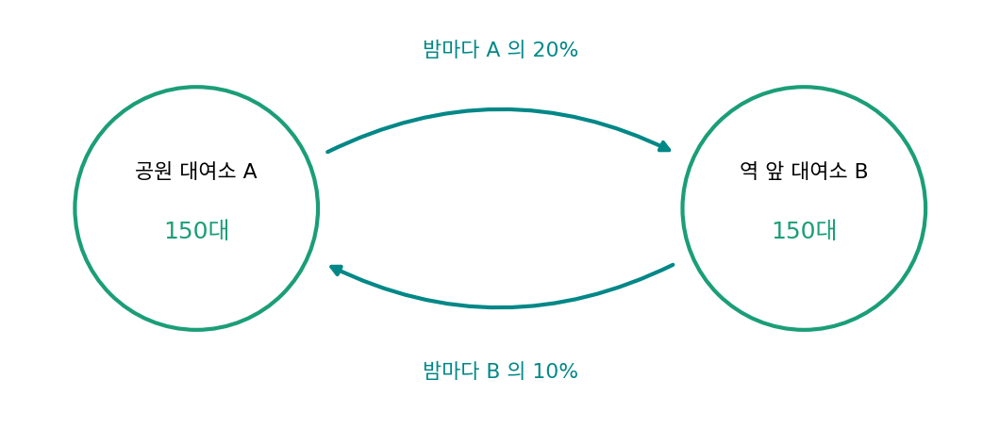
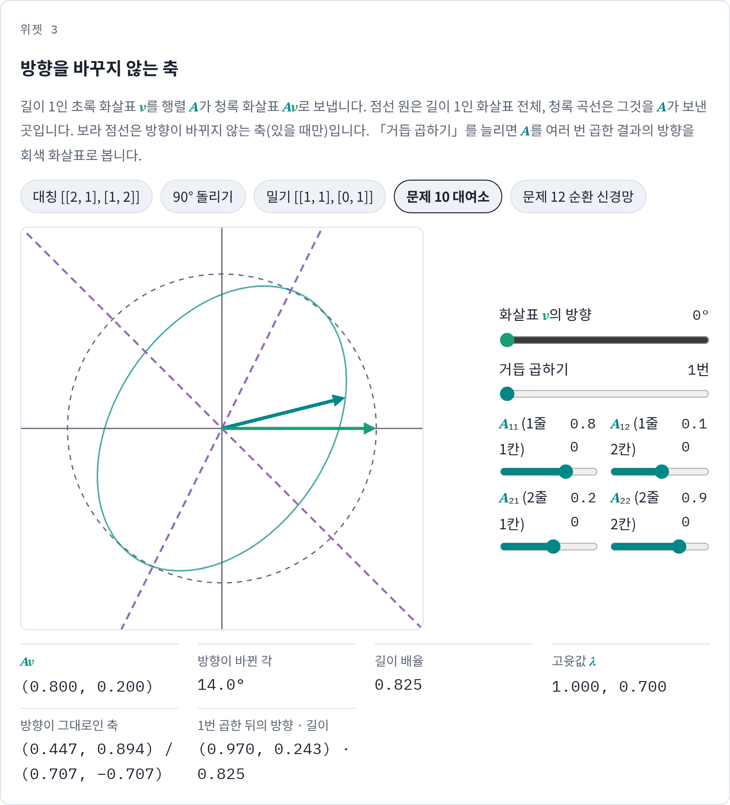
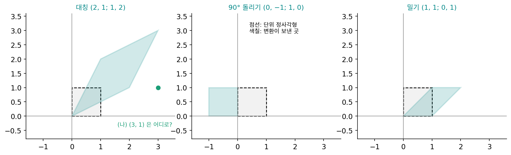
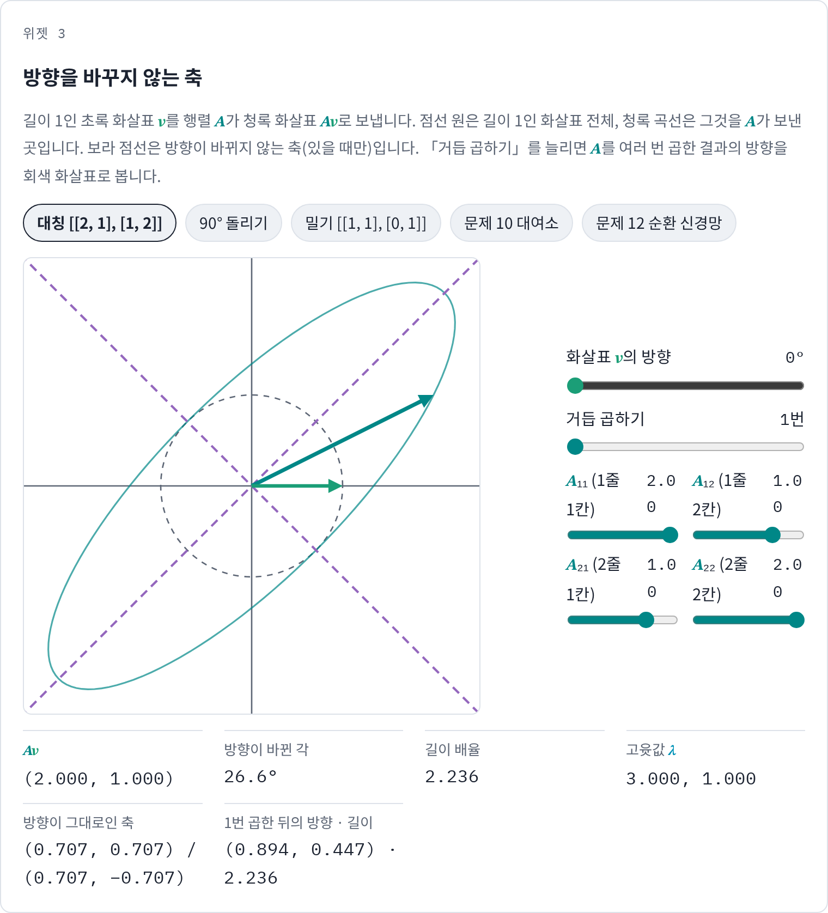
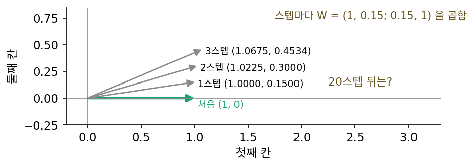
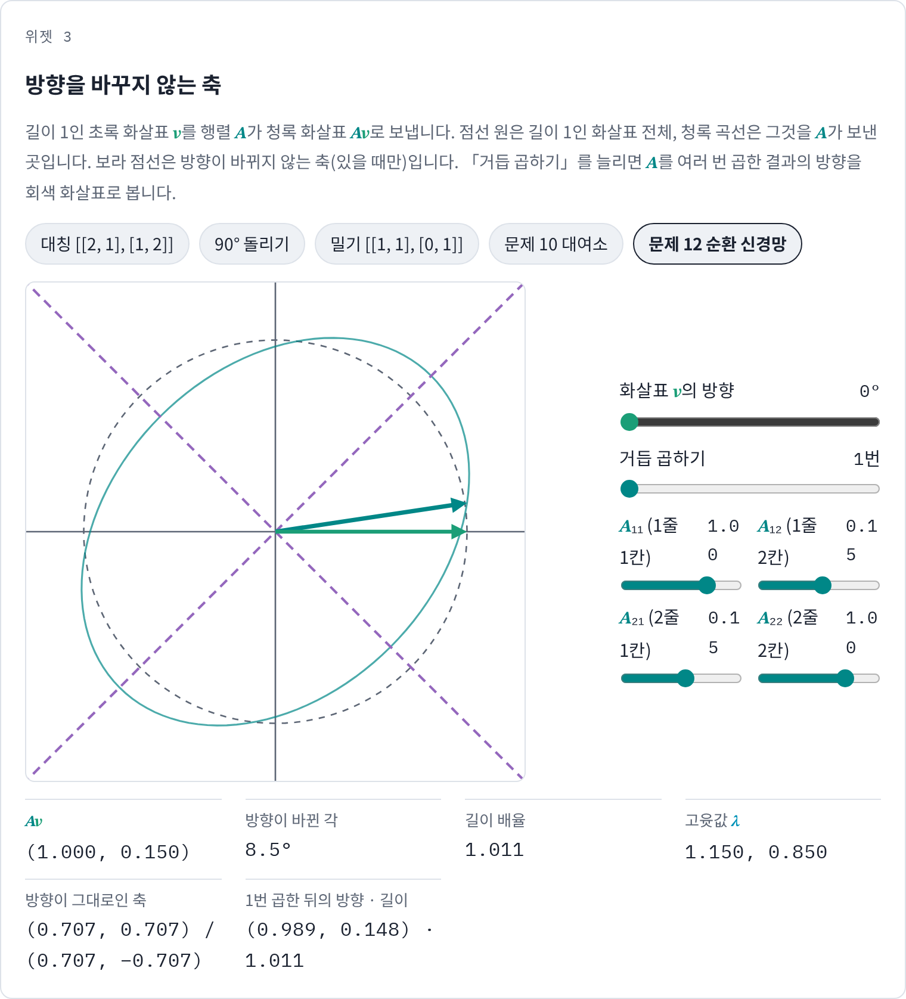

고유벡터: 변환이 방향을 바꾸지 않는 축
지금까지는 신호를 어느 축으로 적을지를 우리가 골랐다. 이번에는 신호에 어떤 변환을 거듭 가한다고 하자. 사진을 흐리게 하는 것처럼, 칸마다 자기 값의 절반과 양옆 이웃의 4분의 1씩을 더한다(양 끝 칸은 없는 이웃 자리에 자기 값을 쓴다). (3, 1, 2)를 한 번 흐리면 (2.5, 1.75, 1.75), 두 번 흐리면 (2.312, 1.938, 1.75)가 된다. 칸 값을 보면 모든 칸이 매번 바뀌어서 열 번, 스무 번 흐린 뒤를 내다보기 어려운데, 이 변환을 가장 쉽게 보여 주는 축이 따로 있을까?
역사: 줄에 꿴 구슬과 행성 궤도
변환이 섞지 않는 축을 찾는 일은 떨림을 다루며 시작되었다. 달랑베르(Jean le Rond d’Alembert)가 구슬 두세 개를 꿴 줄의 작은 떨림을 푼 뒤, 라그랑주(Joseph-Louis Lagrange)는 1766년 구슬이 몇 개이든 통하는 일반적인 방법을 냈다. 구슬마다 이웃 구슬에 끌려 움직이므로 운동 방정식들이 서로 얽혀 있다. 라그랑주는 얽힌 방정식 n개를 서로 상관없는 방정식 n개로 풀어 놓는 방법을 찾았다. 구슬 전체가 한 모양을 지킨 채 한 주파수로 떨리는 움직임을 찾으면, 그런 움직임은 n가지가 있고 아무 떨림도 그 n가지의 합으로 적힌다. 각 떨림의 주파수는 n차 방정식 하나의 근에서 나왔다. 라그랑주와 라플라스는 같은 방법을 행성 궤도가 수천 년에 걸쳐 조금씩 바뀌는 문제에도 썼다.
여기서 시행착오가 있었다. 라그랑주는 그 방정식의 근 두 개가 같으면 풀이에 시간 t가 곱해진 항(t·sin)이 생겨 떨림이 끝없이 커진다고 보았고, 떨림이 작게 머무는 계라면 근이 모두 달라야 한다고 해석했다. 1829년 코시(Augustin-Louis Cauchy)는 대칭 행렬의 근은 모두 실수이며 서로 직교하는 축으로 행렬을 대각선 꼴로 바꿀 수 있음을 처음으로 일반적으로 증명했다. 같은 근이 있어도 대칭인 계는 안정하다는 것은 1858년 바이어슈트라스(Karl Weierstrass)가 밝혔다. 1870년 천문학자 이봉빌라르소(Antoine Yvon-Villarceau)는 축 둘레로 대칭인 단단한 물체가 그 축 위의 한 점에 매달려 흔들릴 때 같은 근을 갖고도 작게 흔들릴 수 있다는 예를 들어 라그랑주의 해석이 잘못이었음을 아카데미에 짚었다. 「고윳값(Eigenwert)」「고유 함수(Eigenfunktion)」라는 이름은 1904년 힐베르트가 적분 방정식 논문에서 썼다고 알려져 있다. 「eigen」은 독일어로 「자기 것의, 고유한」이라는 뜻이다.


구슬 셋이면 3 × 3 행렬의 고윳값이잖아요. np.linalg.eigh 한 줄이면 세 떨림이 다 나오는데요.

라그랑주에게는 「고윳값」이라는 이름도, 대칭 행렬의 근이 어떤 성질을 갖는지 밝힌 정리도 없었어요. 이름은 1904년 힐베르트 때 붙었다고 했죠. 그는 얽힌 운동 방정식에서 n차 방정식 하나를 끌어내고 그 근을 따져야 했어요.

근이 겹치면 t·sin 항이 생긴다는 걱정도 식만 보면 그럴듯해요. 음, 근이 겹칠 때 정말 떨림이 커지는지는 겹치는 예를 끝까지 풀어 봐야 알 텐데, 구슬이 많아지면 그런 예를 손으로 만들기도 어려웠겠네요.

그래요. 그 해석이 틀렸다는 것이 정리로 밝혀진 것은 1858년 바이어슈트라스, 눈에 보이는 반례가 나온 것은 1870년이에요. 라그랑주의 1766년에서 백 년 가까이 걸렸죠.

저는 고윳값이 겹쳐도 함수가 알아서 서로 직교하는 고유벡터를 골라 주니까, 그게 안정한지 아닌지와 얽힌 문제일 줄은 몰랐어요.

코시가 증명한 게 대칭 행렬이면 서로 직교하는 축으로 대각선 꼴이 된다는 거였죠. 그러면 대칭인 흐림 변환에도 방향이 그대로인 직교 축이 셋 있을까요?
흐림 변환의 세 축
흐림 변환을 행렬 A로 적으면 줄마다 (0.75, 0.25, 0), (0.25, 0.5, 0.25), (0, 0.25, 0.75)다. 이 행렬은 왼쪽 위에서 오른쪽 아래로 그은 대각선을 기준으로 대칭이다. 평균·기울기·굽음 축에 A를 걸어 보자.
- A(1, 1, 1) = (1, 1, 1): 고르게 같은 신호는 흐려도 그대로다.
- A(−1, 0, 1) = (−0.75, 0, 0.75) = 0.75 × (−1, 0, 1)
- A(1, −2, 1) = (0.25, −0.5, 0.25) = 0.25 × (1, −2, 1)
세 축은 흐려도 방향이 그대로이고 길이만 1배, 0.75배, 0.25배가 되지만, 다른 신호는 그렇지 않다. (1, 0, 0)은 (0.75, 0.25, 0)이 되어 방향이 18.43° 돌고, (3, 1, 2)도 14.38° 돈다. 이렇게 변환을 걸어도 방향이 바뀌지 않고 길이만 몇 배가 되는 벡터를 그 변환의 고유벡터 (방향이 그대로인 축 / eigenvector)라 하고, 그 배율을 고윳값 λ(람다)라 한다.
고유벡터를 기저로 쓰면 변환이 쉬워진다. (3, 1, 2)의 좌표는 평균 2, 기울기 −0.5, 굽음 0.5였는데, 흐릴 때마다 평균 계수는 그대로, 기울기 계수는 0.75배, 굽음 계수는 0.25배가 되고 세 계수는 서로 섞이지 않는다. 한 번 흐린 뒤 좌표는 (2, −0.375, 0.125), 다섯 번 흐린 뒤는 (2, −0.1187, 0.0005)다. 굽음이 가장 먼저 사라지고 기울기가 천천히 사라지며 평균만 남아서, 스무 번 흐린 신호는 (2.0016, 2.0000, 1.9984)다. 칸마다 따라가면 알기 어렵던 결과를 계수 셋과 고윳값 셋으로 바로 내다볼 수 있다. 흐림 변환의 고유벡터가 하필 서로 직교하는 평균·기울기·굽음 축이었던 것이 우연인지는 아래 문제 11에서 따져 본다. 「잘게 출렁이는 모양일수록 빨리 사라진다」는 성질은 이 책이 끝까지 쓰는 생각이다.

그러면 어떤 변환이든 방향이 그대로인 축이 칸 수만큼 있는지, 있다면 늘 서로 직교하는지는 위젯과 아래 문제 11에서 본다.
ML에서: 같은 행렬을 거듭 곱하는 순환 신경망
순환 신경망은 글자나 단어를 하나 읽을 때마다 기억 벡터에 같은 무게 행렬 W를 곱한다. 백 단어를 읽으면 W를 백 번 곱하는 것이고, 학습할 때 그래디언트도 거꾸로 W를 백 번 거쳐 흐른다. 고유벡터의 말로 보면 기억 벡터를 W의 고유벡터 축으로 적었을 때 축마다 계수가 고윳값의 거듭제곱으로 커지거나 줄어든다. 파스카누(Razvan Pascanu), 미콜로프(Tomas Mikolov), 벤지오는 2013년 「순환 신경망 학습의 어려움에 대하여」에서 그래디언트가 폭발하거나 사라지는 현상을 이 거듭제곱으로 분석했다. 활성화 함수를 뺀 선형 모델에서는 순환 무게 행렬의 가장 큰 고윳값이 1보다 작으면 먼 과거에서 오는 그래디언트가 사라지기 충분하고, 그래디언트가 폭발하려면 그 고윳값이 1보다 커야 한다는 것이다. 단어를 하나 읽는 한 번을 스텝이라 하면, 고윳값 1.15와 0.85가 20스텝 뒤 몇 배가 되는지는 아래 문제 12에서 계산한다.
같은 행렬을 거듭 곱하는 일은 확률에도 있다. 날마다 같은 규칙으로 상태가 옮겨 가는 마르코프 체인은 「오늘 상태별 확률」에 상태가 옮겨 가는 확률을 모은 전이 행렬을 날마다 한 번씩 곱하는 것이다. 오래 돌리면 무엇이 남는지는 아래 문제 10의 자전거 대여소로 먼저 셈해 본다.
고유벡터는 들어간 벡터와 나온 벡터가 같은 공간에 있는 정사각 행렬의 이야기다. 신경망의 한 층처럼 입력과 출력의 칸 수가 다르거나, 행렬이 대칭이 아니어서 고유벡터가 직교하지 않을 때는 입력 쪽 축과 출력 쪽 축을 따로 한 벌씩 고르는 특잇값 분해를 쓴다.
문제 10. 자전거 대여소 두 곳
공원 대여소 A 와 역 앞 대여소 B 에 자전거가 150대씩 있고, 밤마다 A 의 자전거 20% 는 B 로, B 의 자전거 10% 는 A 로 옮겨진다. (가) 첫날 밤, 둘째 날 밤 뒤 두 곳의 대수를 구하라. (나) 밤이 지나도 대수가 바뀌지 않는 배치가 있는가? (다) (150, 150) 은 30일쯤 뒤 어떻게 되는가? 왜 그렇게 되는지 고유벡터로 설명하라. (위젯 3의 「문제 10 대여소」)

(가)는 A가 150 × 0.8 + 150 × 0.1 = 135, B가 150 × 0.2 + 150 × 0.9 = 165요. 둘째 날은 124.5, 175.5요. (다)는 A에서 계속 빠지니까 언젠가 A가 0이 되겠네요.
A의 자전거가 줄수록 A에서 B로 가는 대수는 어떻게 되죠?
20%니까 같이 줄어요. 반대로 B가 늘수록 B에서 A로 오는 대수는 늘고요.
그러면 두 흐름은 어디서 맞설까요?
오가는 대수가 같아지는 데요. 0.2A = 0.1B, B가 A의 두 배인 (100, 200)이요. 넣어 보면 정말 (100, 200)이 그대로예요.
그게 고윳값 1인 고유벡터네. 그럼 (150, 150)은 (100, 200)에서 얼마나 떨어져 있지? 빼 보면 (50, −50), 50(1, −1)이야.
(1, −1)에 행렬을 걸면 어떻게 되나요?

(0.7, −0.7)이요. (1, −1)도 방향이 그대로라 고윳값 0.7인 고유벡터예요. 그래서 밤마다 50 → 35 → 24.5 → 17.15로 줄어요. (가)의 135는 100 + 35, 124.5는 100 + 24.5였어요.

30일 뒤에는 50 × 0.7³⁰이 거의 0이라 (100.00, 200.00)이에요. 처음 배치가 무엇이든 고윳값 1의 축만 남아요. 이런 분포를 정상 분포라고 불러요.

대여소를 기숙사 두 동으로, 자전거를 학생으로 바꿔도 마찬가지네요. 학생들이 방을 옮겨도 학기마다 두 동 인원이 일정하게 유지되니까요.

문제 11. 방향이 그대로인 축이 몇 개인가
평면의 세 변환을 본다. 대칭 행렬 (2, 1; 1, 2), 90° 돌리기 (0, −1; 1, 0), 밀기 (1, 1; 0, 1) (세미콜론 앞이 첫째 줄). (가) 각 변환에서 방향이 바뀌지 않는 축과 고윳값을 찾아라. (나) 대칭 행렬로 (3, 1) 을 보낸 곳을 고유벡터 좌표로 계산하라. (다) 「고유벡터는 늘 서로 직교하는 축 묶음(기저)을 이룬다」는 맞는가? (위젯 3의 앞 세 단추)

(가)는 다 2×2니까 축이 두 개씩 있겠죠. 대칭은 (1, 1)이 (3, 3)이 돼서 고윳값 3, (1, −1)이 (1, −1)이라 고윳값 1이요.
90° 돌리기에서도 두 축을 찾아볼래요?
(1, 0)이 (0, 1), (1, 1)이 (−1, 1)… 어떤 걸 넣어도 90° 돌아가요. 방향이 그대로인 화살표가 하나도 없어요. 고윳값을 구하면 ±i로 실수가 아니에요.
밀기는 (1, 0)이 그대로라 고윳값 1이야. 그런데 (1, 1)은 (2, 1)로 18.4°, (1, −1)은 (0, −1)로 45° 돌아. 방향이 그대로인 축이 (1, 0) 하나뿐이야. 고윳값 1이 두 번 겹치는데 축은 하나야.
(나)는요?

(3, 1) = 2(1, 1) + 1(1, −1)이니까 고윳값을 곱하면 2 × 3(1, 1) + 1 × 1(1, −1) = (7, 5)예요. 행렬을 직접 곱해도 (7, 5)고요.
(다)는 세 예를 보고 답해 봐요. 단서를 붙이면 맞는 말이 돼요.
하나씩 보면, 대칭인 (2, 1; 1, 2)의 두 축은 (1, 1)·(1, −1) = 0으로 직교하고 평면 전체를 적어요. 돌리기는 실수 축이 없고, 밀기는 축이 모자라요. 셋 중에 그 말이 맞은 건 대칭 행렬 하나뿐이네요.
역사에서 본 코시와 라그랑주 얘기와 맞춰 볼래요?
아, 코시가 증명한 게 바로 대칭이라는 조건이 붙은 경우였고, 라그랑주가 걱정한 「근이 겹치면 커진다」는 밀기처럼 축이 모자랄 때 일어나는 일이었네요.

그럼 흐림 변환은 어느 쪽이야?
흐림 변환은 대칭이잖아. 그래서 평균·기울기·굽음이 직교하는 고유벡터로 나왔던 거야.

선형대수 시간에 「실대칭 행렬은 직교 대각화된다」를 스펙트럼 정리라고 배웠는데, 스펙트럼이라는 이름이 여기서 나왔구나.

문제 12. 20스텝 뒤의 기억 벡터
칸 두 개짜리 기억 벡터에 스텝마다 W = (1, 0.15; 0.15, 1) 을 곱하는데(입력은 무시한다), 처음 기억 벡터는 (1, 0) 이다. (가) W 의 고유벡터와 고윳값을 구하라. (나) 20스텝 뒤 기억 벡터를 고유벡터 좌표로 구하라. (다) 처음 기억 벡터의 둘째 칸이 0이었다는 정보는 20스텝 뒤에 얼마나 남는가? 대각을 0.9 로 줄이면 어떻게 되는가? (위젯 3의 「문제 12 순환 신경망」)

(가)는 대칭 행렬이니까 (1, 1)과 (1, −1)이고, (1, 1)은 (1.15, 1.15)라 고윳값 1.15, (1, −1)은 0.85예요. (나)는 (1, 0) = 0.5(1, 1) + 0.5(1, −1)이고, 스텝마다 1.15배, 0.85배니까 20스텝 뒤 0.5 × 1.15²⁰ = 8.1833, 0.5 × 0.85²⁰ = 0.0194예요. 합치면 (8.2026, 8.1639)요. 15% 커지는 게 스무 번이면 16.4배나 되네요.
처음 벡터는 (1, 0)으로 두 칸이 아주 달랐어요. 지금은요?

(8.2026, 8.1639)라서 두 칸이 거의 같아요. 처음의 차이가 어디로 갔지?
처음 두 칸의 차이는 어느 축의 계수에 담겨 있었죠?
(1, −1) 축이요. 아, 그 계수가 0.85²⁰ = 0.0388배로 줄었어요. (1, 1) 축의 계수가 8.1833으로 커지는 동안 (1, −1) 축의 계수는 0.0194만 남았어요. 50스텝이면 0.0001이고요.
학습할 때 그래디언트도 같은 W를 거꾸로 거쳐요. 그러면 무엇이 일어날까요?

고윳값 1.15 축으로는 그래디언트가 폭발하고, 0.85 축으로는 사라지겠네요.
그럼 (다)처럼 대각을 0.9로 줄이면 나아질까요?
대각을 0.9로 줄이면 고윳값이 1.05와 0.75라 20스텝 뒤 (1.3282, 1.3251)로 폭발은 덜한데, 0.75 축은 더 빨리 사라져요. 고윳값이 1보다 크면 터지고 작으면 잊으니까, 1 근처로 맞추는 게 어렵겠어요.
그래요. 오래 전 단어를 기억하게 만들기 어려웠던 것도 이 거듭제곱 때문이에요. 흐림 변환에서 굽음 계수가 0.25배씩 먼저 사라지던 것과 같은 고윳값 거듭제곱 계산이죠.

고윳값 1.15와 0.85를 매주 과제 점수의 가산점과 감점으로 바꿔 보면 알겠어요. 15%씩 가산점이 붙으면 학기 말엔 감당이 안 되고, 15%씩 깎이면 첫 주 과제는 아무 의미가 없어지잖아요.
